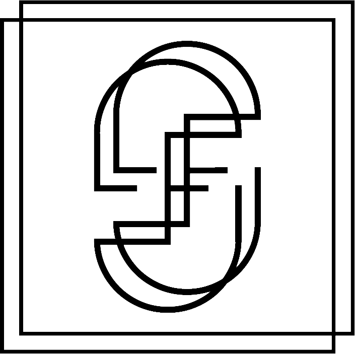

François Simitchiev
Contrebassiste de formation classique, avec un fort intérêt pour les musiques électroniques, j'explore les chemins à la croisée de la musique classique, de l'electro et de l'ambient. Sensible à l'image, je travaille également comme compositeur / sound designer dans le cadre de projets multimédia, pour la danse, des expositions etc...
Passionné par la communication et le web, je me suis également formé au métier d'intégrateur / développeur web, et ai suivi des cours de design, dans le but d'apporter mes compétences au service des artistes, artisans, au secteur culturel et associatif.
projets
contact